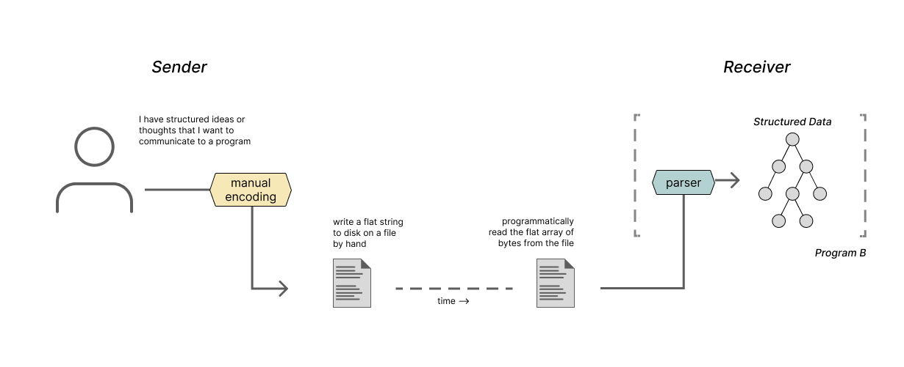
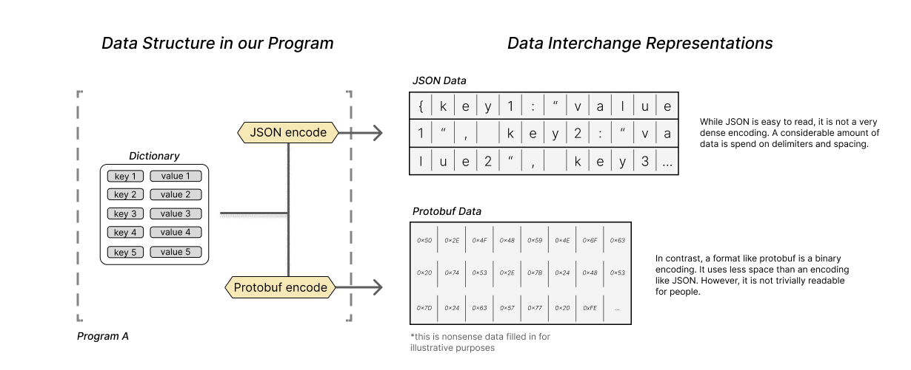

Parsers (and Encoders) Everywhere
Originally Authored: June 2023 | Last Updated: June 2023 | Author: Beau CarlborgIn this series of posts, I'd like to discuss a few things:
- Section 1: We'll go over my first encounter with parsers as a component in compilers and I'll recount how difficult that learning parsers was (and still is) for me.
- Section 2: We'll develop an idea that helped me see the applicability of parsers in so many more contexts beyond compilers.
- Section 3: We'll walk through a few examples of how parsers show up in real software.
- Section 4: We'll take a step back and ask if parsers are really necessary (spoiler: they are).
- Section 5: We'll close things out with some key takeaways.
1: Encountering parsers and attempting to learn them
Parsers: the compiler phase that caught my eye
I first encountered parsers as a topic worth studying while learning about compilers. Most compilers are organized as a series of phases. Those phases can be grouped by the frontend phases, and the backend phases. The frontend is responsible for processing and text of your program while the backend isresponsible for optimizing your program and outputting instructions for your target machine.
The lexer and parser are the earliest stages of the compiler. Together, they extract a structured representation of the program from the input text.
The lexer processes the program's text character by character, and outputs a stream of tokens. The lexer transforms our program by grouping the input characters together to create a series of tokens. The lexer passes these tokens to the parser. The parser then takes that stream of tokens and builds an abstract syntax tree representing the program's structure. While it constructs that tree, the parser also verifies that the input program's syntax is correct.

When learning about compilers, the parsing phase immediately captured my interest. There is something a bit magical about what the parser does. The parser takes a flat list of words from a text file and extracts a structured representation of a program. Other phases then can apply transformations or verifications to that structured representation, but it is the parser that bootstraps us up from a meager ol' list of words to a meaningful representation of a program.
Down the parsing rabbit hole
I decided to focus on parsers and attempt to deeply understand them before moving through to any phase of the compiler. I quickly realized, learning about parsers is difficult, surprisingly difficult.
I tried to use the compiler resources to understand parsers, but I was struggling. I felt lost in discussions comparing one parsing approach to another. I didn't really understand the different categories of parsers. Some of the books hold your hand through a parser implementation or two, or maybe they teach you how to use a parser generator, but I still just didn't feel like I was getting it.
I was learning the names of the parsing algorithms, and I was absorbing some of the acronyms and jargon... but the essence of parsing remained elusive. I decided to take some steps back, and view the problem at a high level. I would try to find generic, non-compiler related resources on parsing. My approach was to begin with top level parser definitions and then dig deeper.
If you search around for a definition of a parser in the context of computer science, you are very likely to find something along the lines of:
Parsers are software components or programs that analyze input data by following a set of predefined rules or patterns. Their main objective is to examine a sequence of symbols or tokens and understand their intended structure and meaning.
Reading a definition like this, we see that a parser takes a stream of input characters and outputs something that is structured and meaningful. But the definitions don't reveal much beyond that. To me, these definitions almost lend parsers a mystic quality... Parsers find meaning in symbols. Parsers extract structure from the structureless. Parsers are power. Parsers are the one truth. Parsers are all. Parsers are the ring to rule them all. But, maybe I have been reading about parsers for too long now.

The broad definitions for parsers left me a bit unsatisfied. So I decided to go beyond these defitinions, and to do that, you need to go into a bit of theory.
Parsers are, at their core, a way to process text. Because of this, the theory that backs parsers is deeply tied with formal language theory (a field also very concerned with processing text) and automaton theory (a field about abstract computing machines that process input streams of text).
These two fields provide the theoretical backdrop for learning about parsers.
So I started with formal language theory. I was reading books and papers about grammar, syntax, and semantics. I was learning about how different grammar productions yield varying complex languages and about how parse trees represent the derivation of a string within a grammar. You encounter some really interesting ideas when learning formal language theory. One that really stuck with me was that grammar is a finite representation for an infinite language. It's a simple idea, but the more you think about it, the more profound it seems.
Because of Chomsky's work on the hierarchy of languages, you can't learn about formal language theory for long without getting into automaton theory (aka theoretical computer science). You will also learn about finite state machines, push down automata, turing machines, and all of their deterministic and non deterministic variants. I was learning about how certain subsets of language grammars can be related directly to certain classes of automaton.
But ultimately, the theory doesn't tell you the whole picture about parsing. You also need to learn about the practical side of parsing.
If you want to get up to date with the various applied approaches for parsing, you will find yourself learning about a number of different grammar subsets like LL, LR, SALR, and LALR. You'll learn about alternative ways of statically defining your parser behavior like Parser Expression Grammars (PEGs for short). You might learn about other parsing approaches that stretch outside of the traditional theory like Pratt parsing and packrat parsing.
All of this is to say, I was deep deep down the parsing rabbit hole for many many weeks. And you know what? I still don't really know if I understand parsers. The more I learned, the more I felt like it would be impossible to ever fully grok parsing. I tried my best to learn as much as I could about parsing, and after all of this work I don't know if I've succeeded in even learning 10% of what I need to know.
The info is tricky and the topic is mired in too many acronyms. After a while, your brain slowly starts to melt into a big parser alphabet soup.
2: A generalizing definition of parsers
I was lost digging around in theory books trying to understand parsers, hopelessly far away from doing anything practical with them. But at some point, I had a realization about parsers that brought me out of the weeds and back to real use cases. This realization was a simple, and clarifying definition of what a parser does.
Viewing parsers in this new light helped me see the applicability of parsers in so many different types of software. I started to see that parsing, on some level, was incorporated into most programs I use. I realized that parsing was incredibly applicable beyond compilers.
Below, I provide the definition of parsing that helped me see parsers everywhere. I introduce the definition, then spend the rest of this section clarifying and contextualizing the definition.
A clarifying definition of parsing
Parsers (and their inverse partner in crime encoders) allow us to efficiently encode and decode complex structured data like graphs, trees, and dictionaries using flat data structures like strings and arrays of bytes.

This definition is only a slight rephrasing of other definitions for parsers you might come across. But something about this particular phrasing really stuck with me. I want to take some time to develop the ideas behind it.
The same definition, but in more words
Let's break down that definition into two parts in order to really absorb it:
Parsers (and their inverse partner in crime encoders) allow us to efficiently encode and decode complex structured data like graphs, trees, and dictionaries using flat data structures like strings and arrays of bytes.
What exactly do we mean by complex structured data? When I say structured data, I am imagining data structures like lists, graphs, trees and dictionaries. I am imagining any set of data that has values with mixed types. Data where each datum has relationships to other datum.
Oftentimes, it is the core purpose of a program to update some internal structured data as a response to outside events from a user or some other program.

Most programs worth writing about don't work in isolation though. Many
programs work in conjunction with other programs. To work together,
they often must share a copy of some internal structured data that
they maintain.

Programs have many interfaces available to communicate with each other from file IO, to sockets or shared memory. It turns out that the most common interfaces that programs use to communicate with each require that the data being sent is in the form of a string or byte array.
With this in mind, let's return to the provided definition of a parser and encoder:
Parsers (and their inverse partner in crime encoders) allow us to efficiently encode and decode complex structured data like graphs, trees, and dictionaries using flat data structures like strings and arrays of bytes.
Our programs want to communicate structured data with each other, but they only have the ability to send strings and arrays. Parsers and encoders are what will allow our programs to transform their structured data into those strings and arrays and back.
Hopefully, at this point, parsers and encoders are starting to sound a bit more applicable beyond compilers!
I mentioned that most common interfaces that programs have to communicate require data to be sent in the form of a string or array. Let's look into that a bit more deeply and see what some of these interfaces are.
Examples of programs communicating using strings and arrays
Two programs communicating on the same machine using the operating system
Programs almost always operate within the isolated environment that an operating system provides. The operating system provides an environment that allows each program on the computer to believe that it has all of the computer's resources to itself.
Because of this isolation that the OS provides, two programs on the same computer that want to communicate some data with each other need to use the communication interfaces that the operating system provides. Most of these interfaces require that the data being sent between to programs is organized as a byte stream or a character stream. For example interfaces like file IO and sockets require that the data being sent between programs is organized as a stream or array of bytes or chars.
So if we imagine program A and program B on the same computer both running, wanting to communicate some structured data to each other using the operating system. It is likely that they will need to use a string or byte array... and so they will need to leverage an encoder and parser to make the communication happen.

There are other interfaces that programs can use to communicate which do not explicitly require the data be serialized into a byte array or string. Shared memory between two processes is one such example. But even when using shared memory, there must still be some form of contract between the sender and receiver to ensure that the data is organized in a manner that is readable for the consumer. So even though parsing and encoding may not be strictly necessary in the typical sense when using shared memory, the data still needs to be structured in a sensible manner.
Two programs on different machines communicating using the internet
There are many cases in which two programs running on separate machines need to communicate some shared state to each other. These two programs could be two services in some micro-service architecture. They could be a client and server communicating data according to some protocol. They could be two copies of the same program running on different machines communicating with each other.
There are a number of protocols that programs can use to communicate over the internet, but ultimately, each of those protocols boils down to a method for sending a stream of bytes. So regardless of what the programs are doing, they are still communicating using arrays of bytes.
So this is yet another example of needing to send structured data using flat data!
Again, consider programs A and B, communicating some structured data to each other.

Two programs communicating over a period of time using persistent files
Oftentimes, the two programs that are communicating may not be running at the same time. So it is necessary for the sending program to write its message into a file that the receiving program can open and read at a later time.
The key observation is that files are just another format for an array of bytes or a string.
Again let's imagine Programs A and B. In this case, Program A will write its data into a file that program B will read at a later point. It is also possible to imagine program A writing data to a file before it closes that it will reference again once it is re-started!

In a unix-like environment, this mode of communication is actually the same as how two running programs may communicate like in the example above because "everything is a file." But that really isn't what we are discussing here.
A human communicating with a program using strings
All of the examples thus far have focused on situations in which programs need to communicate with other programs. To take things in a slightly more abstract direction, we can also consider situations in which the sender is a person and the receiver a program.
The person has an idea of the structured data they want to communicate to the program. So this person will manually encode that structured concept into a file. This may seem odd, but it is actually more common than you may initially think.
When you are writing config files for some program like your text editor, or even when you are carefully assembling your arguments for some script on the command line, you are taking your structured concept about what you want the program to do and encoding that data into a string. Then, the program recipient will take that string and parse it in order to decide what to do!

In many ways, the same thing happens with a program as the sender and a human as the receiver. Programs that write log files or provide a stack trace are also encoding some information about the programs internal state into a string format that you as a human can easily parse and understand
It turns out, that you and I were the parsers and encoders all along üíõ
3: Parsers and encoders in the real world
We've talked a lot about how parsers and encoders are useful for communicating between the abstract programs A and B. Now lets ground the conversation in some examples of real technologies and programs.
Data serialization formats: JSON, XML, YAML & protobuf. oh my.
In the examples above, I showed programs communicating using strings using all sorts of mediums. However, I was a bit vague about what the content of those strings were. I made it clear that we had a need to communicate some structured data, but I didn't really describe how we would actually represent that data as a string. In practice, there are a number of formats for writing structured data in strings or byte arrays, and most of them will already be familiar to most software developers.
These formats specify how certain abstract data structures can be encoded into strings. Broadly speaking, these formats can all be called data serialization formats, data exchange formats or data interchange formats. Common examples of these formats include JSON, XML, YAML and TOML. There are also a number of other slightly less common formats such as Protocol Buffers, FlatPack or GRPC.
These data serialization formats provide a well defined string or binary pattern to represent common data structures like dictionaries and nested arrays using strings. With any of these formats, we have the ability to reliably encode common data structures to share between programs. So, a java program can encode an ArrayList of Hashmaps into a JSON string and send that data to a python program and be sure that the structure of the data will not be lost.

The various formats are all unique, and have interesting pros and cons to compare.
At a surface level, many of them use different nomenclature and jargon to describe their interfaces. Some formats are encoded and parsed, others are marshaled and unmarshalled, and others yet are serialized and deserialized. Despite the different names, they all serve a similar purpose.

While many of the formats all serve the same general purpose, each has their own ergonomics and aesthetics that make them uniquely suited for certain tasks.
For example, JSON is quite popular because it seems to strike a nice balance between being easily readable by humans and programs. So it is useful for data that is being exchanged between programs that may need to be edited or viewed by a person as well.
Other formats like XML are highly flexible, and more easily allow encoding of complex data structures. So a format like XML may be useful for encoding data that is organized in a very bespoke way with many domain specific names and relationships.
Others like YAML and TOML prioritize being easily human readable. These data formats are incredibly useful for contexts in which the data is primarily being written by a human and passed to a program. These formats are lightweight enough to feel natural writing, but can be difficult to work with as the data being encoded becomes more and more complex.
Other formats like protobufs and flatpack serialize data structures directly into a binary format. This makes it nearly impossible for a person to parse these formats just by looking at them. But what they lack in readability, they make up for with efficiency. Binary is a much denser way to encode information with strings. Delimiters and separators in these formats can be a couple of bits rather than entire characters. By disregarding an emphasis on human readability, these formats can also be designed to be parsed or encoded much quicker than a format like JSON or XML.
These binary formats really shine in contexts where performance is important. It is not uncommon to see these formats used in interactions between high throughput micro services or between processes running on the same machine which communicate heavily.

As a software engineer, these data interchange formats show up everywhere. You see them in database rows, you see them as payloads in apis, you see them as formats for config files, and you see them as ways to communicate between different programs. Parsers and encoders are the secret sauce that makes all of this work.
Application specific file formats need parsers and encoders too
If you open up the file browser on your computer, you will see any number of different files. Many of the files on your computer will be executable programs (chrome, spotify, grep, etc)... but most likely, there will also be a number of files that only work with some specific program.
You may see files like .docx files for Microsoft Word and .keynote for keynote presentations. You may have .psd files if you save a photoshop project. You might have .blend files for a 3D project in blender. These are files that can only be opened and created by the specific.
Many different programs have their own specific file formats. These file formats allow a program to store the state necessary for the application to close and reopen keeping all of the project data exactly where you left off.
These file formats are no different from the data exchange formats that we specified above. These file formats are (usually) a binary representation of the structured data needed to display some sort of project or program state. When these files are created, the program encodes the project data into a specified format, and when you want to open that file at a later time, that project file is parsed and opened.
For example, consider a photoshop project file the (.psd) extension. When you save a psd file, the entire working state of your photoshop project is saved. The root image, any layers of effects or image filters you have added on top of the image. All of this data can be thought of as one big data structure. When you want to save all of that, Photoshop will take all of that data, encode it, and write it out to the .psd binary file format. When you want to open that file later, photoshop will parse that binary data and extract the same program state that was saved earlier.
The psd file format happens to be a binary file format. Much like protobuf or flatpack, the data is not trivially human readable. The binary format allows more data to be packed into the same file while keeping a minimal footprint. Oftentimes, the specifics of the file format is (maddeningly) made proprietary. This means that it is not easy for a third party to write their own parser or encoder for that file format. Many times, the format can be reverse engineered, but that is an uphill battle, especially when updates are made to the file format.
In contrast, some application specific file formats will use a human readable data interchange format to store their data. For example, Microsoft Word's current .docx file format stores a document state in an XML based representation. I have seen note taking apps that use markdown as a file format, for the project state, and I have seen other programs that use JSON as the format for their project state.
The key takeaway for this section is that most files on your computer have some specified structure. The file's purpose is to store some structured data for later use by a program. In order for this all to work, parsers and encoders are needed. Those files need to be parsed when they are opened, and data needs to be encoded when those programs are saved.
Parsers in compilers revisited
Let’s turn back to the program that started us on this journey: compilers. Now that we have a more well rounded concept of parsers, it is interesting to consider their role in compilers again with a new perspective.
At a high level, the role of a compiler is to take a text file version of a program and turn that into an executable file that a program can run.
We already know that a parser is involved in the compiler, and that the parser extracts structured data from flat text. So what exactly is the structured data in our programs? The program text itself is a flat string representation of ...something?
The simplest type of program may just be a textual representation of a list of instructions for the computer. This is what we would see for a program written in the simplest form of machine code. But modern programs are more than just a simple list of instructions. An object oriented program specifies classes, and interfaces. A declarative programming language like prolog specifies logical structures that can be analyzed. A program with rich types specifies the formats of data and functions that can be passed around. All of this is much richer than a simple list of instructions.
When we are writing programs, we are encoding a list of instructions as well as a complex set of relationships, restrictions, and formats of data. When we program, we are taking a very complex structured representation of our intention for our software, and encoding that into a string.
The compiler's job is to take the string that we've written, extract the structured concept of what we want our computer to do, and then encode that same concept back into a list of instructions that is appropriate for our particular machine.
That is a big task. And strictly speaking, within a compiler, that parser doesn't manage that whole task. The parser can only feasibly extract some simpler structures. The parser is responsible for extracting the abstract syntax tree from our program.
It is responsible for parsing a structured tree-like representation of our program where each node is some syntactic element like a block, a particular type of statement, or a particular expression.
When we program, these syntactic components often feel like the building blocks that we are assembling. The parser figures out how we arranged those building blocks, and passes them along to later phases of the compiler for more analysis.

This realization was somewhat surprising to me. When writing code, we often do not explicitly consider that we are manually encoding some structured data into a text file. It feels more intuitive than that. It feels as if we are manifesting our will in the program text. I would never be thinking precisely at the level of the syntax tree that I am encoding in my program.
Instead, the process of "encoding" our intention for a program is a slightly more natural process of fitting together pieces of our program in terms of higher level concepts like flow of control without burdening ourselves with the intricate details of how the abstract syntax tree for this program will look.
Parsers and encoders really are everywhere
The more time you spend considering parsers and encoders, the more you start to see them. It becomes hard to think of a single program that doesn't do at least some level of parsing and encoding at the edges of its functionality.
For some programs, the parsing and encoding may be a small component of its overall purpose. And for other programs, the parsing and encoding may be the core of what the program does. But in nearly every case, parsing and encoding is there.
4: Is all of this encoding and parsing necessary?
If you've been reading along, we've established that parsers and encoders are everywhere. Strings and byte arrays are a medium of communication everywhere. When you spend enough time in this mode of thinking, everything starts to look like a parser or encoder.
But if you start thinking too hard about all of that converting to and from strings, you may start to wonder why we are even doing this to begin with. Isn't it expensive to do all of this work? Surely there must be some better way?
I certainly had these thoughts, and the idea that I kept coming back to was this: Isn't program memory already a flat array of bytes? Why not just send that?
Why not just send a memory dump?
Whatever data the sending program has must already be represented in memory. So if it wants to share that structured data, why not just transmit the relevant part of memory directly to the receiver. Then the receiver could just load that data directly into memory. Boom, parsers and encoders made obsolete! Easy! Everybody wins!
Not so fast there cowboy.
There are a number of reasons why that may not be a good idea. Many of which boil down to the fact that programs all have very different ways of organizing data in memory. Because of this, it is very possible that the receiver loading the data will construct a malformed or corrupted version of the transmitted data.
Some of the ways that programs can have different memory layouts:
- Different machines use memory regions that start and end in different places, so the addresses from the sending machine may not coincide with the addresses on the receiving machine. This is especially true if either of the programs is running in an embedded system.
- Even if your operating system abstracts the hardware's memory layout from you... that OS still may choose to layout the memory address space presented to programs in a different way.
- Two programs written in different languages will represent the same abstract data structure like an array of the letters in the alphabet may have completely different ways of storing that data structure in memory. One program may use a dynamically heap allocated doubly linked list to store that array, while another may use a statically allocated fixed sized array.
Any one of these differences in environments will result in the the receiver constructing a corrupted picture of what was originally sent

Certainly, it would not be impossible to get this working. If you control all the environmental variables between the sender and receiver, then you can make it work. There are even interfaces for sharing memory between two programs with the OS! But even in cases where you use that memory sharing interface, it is probably still useful to use some agreed-upon format for the data that you are sharing in that memory and use a form of a parser and encoder to write and read that data.
A fun aside: I am not 100% sure if this is true... and I can't find a reference for this. But I have a vague memory of reading somewhere that one of the early binary .doc file format versions for Word on DOS was in fact just a core dump of Word's memory. So, when Word was opened again with that file, the entire program state could simply be initialized from that one file. Again, I'd like to note, this may be totally false, I only have a vague memory of reading this.
What about the shared memory?
Ok, so maybe using memory dumps as a tool to avoid parsing is not the best idea... but what about using the operating system's shared memory interface?
Most operating systems provide some way of sharing memory between processes. Without getting too deep into the weeds, it is enough to say that two processes can effectively share pages of memory. If one process writes to that section of memory, then the other process will see that same updated data in its section of memory.
This is starting to seem like a way out of using parsers and encoders to share structured data between two programs.
If two programs are sharing memory, there is technically no need to encode structured data into some serial format in order to share it with a recipient process. However, the programs do still need a way to agree about the structure of the data. The programs need a shared or common understanding of what the layout of the data will be in this shared region of memory. So, it is still likely that as a program is writing to that shared section of memory, it is abiding by a structured system for writing data so that the reading program knows where to find what it needs.
This means that even though there is no explicit encoding step to send data that takes all the data and encodes it into one big string or array, every time we write to this region of memory, we have to be quite intentional about writing data. It is almost as if we are "encoding" our structured data every single time we write to this region.
The biggest advantage of using shared memory as a means of communication is that there is no need to duplicate our data in order to send it. In a normal parsing encoding scheme, to send structured data somewhere, we effectively need to have 2 copies of the data. One copy in its original format, and another in the encoded string or byte array format. Shared memory, let's avoid having two copies of our data, and instead, simply make our original copy public to some other process.
So, are encoding and parsing necessary or not?
For the most part, parsing and encoding is necessary. If we are going to be communicating between two programs that are not on the same computer, or are not running at the same time, then we will need to use some sort of encoding and parsing scheme. In cases where the programs are not on the same machine, we will need to encode our data into some byte array to be sent in packets over the internet. And in the case where our program is using a file to store structured data for later reference, we need to encode that information so that it can be written and stored in disk.
Shared memory does give us some affordance for avoiding using buffers for our encoding and parsing, yet, shared memory still requires that the communicating programs establish some sort of contract for how the data that is important to them will be represented in memory.
But ultimately, the vast majority of interfaces between programs operate with strings and arrays of bytes, and whenever you are using one of those interfaces, you are going to need parsers and encoders.
5: Takeaways
So what can we take away from all of this:
- To truly learn parsers, you need to go deep into a number of terse and stuffy academic topics. Diving deep into the theory behind parsers is surprisingly tough.
-
Despite the difficult theory behind parsers, they are broadly
applicable in all sorts of programs.
- One way to come to this realization is to observe that parsers and encoders are the technology that enables sharing structured data between two programs.
- It is easy to lose sight of parsers' broader applicability when going too deep into the weeds on the nitty gritty details of parsing.
-
You are using programs that rely on parsers and encoders all the
time
- Any time you are using JSON, XML, YAML, protobuf, etc. you are using a program that is relying on parsing and encoding structured data.
- Most programs need some way to persist structured formatted data. Whether it be application specific file formats or configuration files. No matter how you shake it, a parser will be involved.
-
You (mostly) can't get around parsing
- Most interfaces require that the data being sent is a string or array of bytes
- Shared memory is one exception to that rule. But even then, you still need to agree on a format for the data being shared between programs.
But most of all: Parsers are pretty radical. Don't be discouraged if you don't understand every intimate detail about how they are constructed. The theory and academics behind them is tough, but with a bit of knowledge, it is easy to appreciate their importance in all sorts of applications.